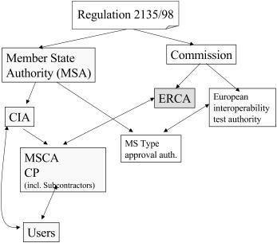
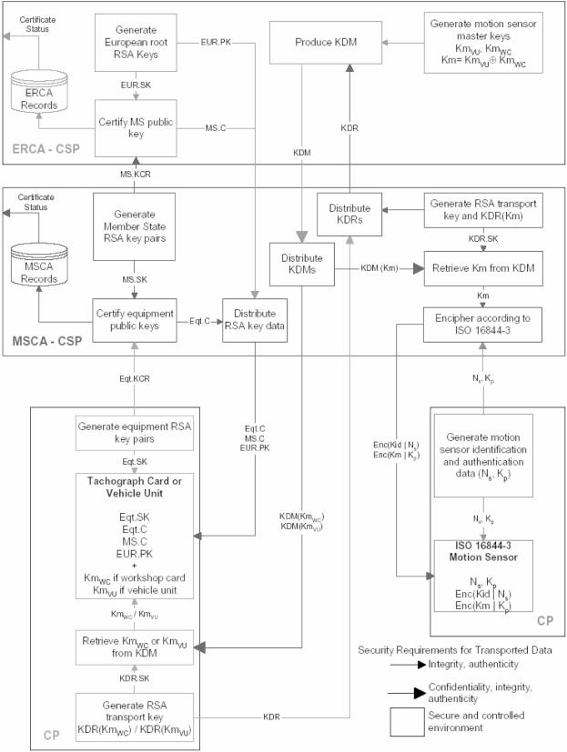

- 1
Einleitung
Dieses Dokument ist die Policy der Bundesrepublik Deutschland, im Folgenden kurz als die D-MSA-Policy bezeichnet, für den elektronischen Fahrtenschreiber gemäß VO (EG) 3821/85 und Anlage 11 des Anhangs I (B) der VO (EG) 2135/98 in Verbindung mit VO (EG) 1360/2002 (CSM_008).
Die D-MSA-Policy befindet sich im Einklang mit der
- •
Digital Tachograph System – European Root Policy (Version 2.0 Special Publication I.04.131)
- •
VO (EG) 3821/85
- •
VO (EG) 2135/98
- •
VO (EG) 1360/2002
- •
VO (EG) 561/2006
- •
„Common Security Guideline“.
1) .
- 1.1
Zuständige Organisationen
Das Tachographen-System verfügt über folgende Organisation
2) :

D-MSA
Die für die Umsetzung der VO (EG) 3821/85, VO (EG) 2135/98 und VO (EG) 1360/2002 in Deutschland zuständige Stelle wird im Folgenden dem internationalen Sprachgebrauch folgend mit D-MSA (Deutschland-Member State Authority) bezeichnet und vom Bundesministerium für Verkehr, Bau und Stadtentwicklung wahrgenommen. Offizieller Ansprechpartner ist:
Bundesministerium für Verkehr und digitale Infrastruktur
Referat S 36
Robert-Schuman-Platz 1
D-53175 Bonn
Telefon: +49.228.300-5365
Fax: +49.228.300-1470.
D-CA
Die D-MSA beauftragt das Kraftfahrt-Bundesamt (KBA) mit der Wahrnehmung der Aufgaben der D-CA
Kraftfahrt-Bundesamt
Leiter der D-CA
Fördestraße 16
D-24944 Flensburg
Telefon: +49.461.316-1610
Fax: +49.461.316-1767.
D-CP
Die D-MSA beauftragt das Kraftfahrt-Bundesamt (KBA) mit der Wahrnehmung der Aufgaben des D-CP
Kraftfahrt-Bundesamt
Personalisierungsstelle
Fördestraße 16
D-24944 Flensburg
Telefon: +49.461.316-1240
Fax: +49.461.316-1822.
Dazu gehört insbesondere die Verantwortung für die Umsetzung der D-MSA-Policy. Die D-CA/der D-CP kann die Erfüllung (von Teilen) ihrer/seiner Aufgaben externen Dienstleistern übertragen. Hierdurch wird die Verantwortung der D-CA/des D-CP in keiner Weise eingeschränkt.
D-CIA
Die Wahrnehmung der Aufgaben der D-CIA wird von den Bundesländern jeweils individuell bestimmt.
Hersteller von Fahrzeugeinheiten und Hersteller von Weg-/Geschwindigkeitsgebern:
Siemens AG
Siemens-VDO Automotive
Commercial Vehicles
Heinrich-Hertz-Straße 45
D-78052 Villingen-Schwenningen
Telefon: +49.7721/67-0
Fax: +49.7721/7847.
- 1.2
Genehmigung
Die D-MSA-Policy wurde von der D-MSA bei der EU-Kommission zur Genehmigung vorgelegt und durch
European Commission
Directorate General JRC
Joint Research Centre
Institute for the Protection and Security of the Citizen
Traceability and Vulnerability Assessment Unit
TP 361
I-21020 Ispra (Va)
Italy
am 3. Juli 2007 genehmigt
3) .
- 1.3
Verfügbarkeit und Kontakt-Details
Die D-MSA-Policy steht in elektronischer Form auf der Web-Seite http://www.kba.de zur Verfügung.
Fragen und Kontakt-Details zu dieser nationalen MSA-Policy sind zu richten an:
Bundesministerium für Verkehr und digitale Infrastruktur
Referat S 36
Robert-Schuman-Platz 1
D-53175 Bonn
Telefon: +49.228.300-5365
Fax: +49.228.300-1470.
- 2
Geltungsbereich
[r2.1]
Die Gültigkeit der D-MSA-Policy erstreckt sich ausschließlich auf die Wahrnehmung der Aufgaben im Rahmen der VO (EG) 3821/85, VO (EG) 2135/98 und VO (EG) 1360/2002.
[r2.2]
D-MSA und D-CA stellen im Rahmen ihrer jeweiligen Zuständigkeiten und der jeweils geltenden Rechtsvorschriften sicher, dass die von der D-CA erstellten Zertifikate und Schlüssel nur für die in der VO (EG) 3821/85, VO (EG) 2135/98 und VO (EG) 1360/2002 definierten Zwecke im Rahmen ihrer individuellen Zuständigkeiten und den relevanten gültigen Regelungen eingesetzt werden.
[r2.3]
Der Geltungsbereich der vorliegenden D-MSA-Policy ist in folgender Übersicht fett markiert
4) :

Figure 1 Description of Annex I(B) key management
- 3
Allgemeine Regelungen
- 3.1
Aufgaben und Verpflichtungen
Dieser Abschnitt beschreibt Aufgaben und Verpflichtungen der an der Umsetzung der VO (EG) 3821/85, VO (EG) 2135/98 und VO (EG) 1360/2002 beteiligten Stellen, soweit diese den Gültigkeitsbereich der D-MSA-Policybetreffen.
[r3.1]
Die
D-MSA:
- a)
nimmt ihre Aufgaben in Abstimmung mit den Ländern wahr,
- b)
ist zuständig für die Erstellung und Aktualisierung der D-MSA-Policy und veranlasst deren Genehmigung durch die Kommission,
- c)
ernennt die D-CA und gibt diese Ernennung der Generaldirektion für Verkehr und Energie der Europäischen Union (DG TREN) bekannt,
- d)
ernennt den D-CP oder lagert diese Aufgabe an einen externen Dienstleister aus,
- e)
kann Überprüfungen der D-CA, der D-CP, der D-CIA, der Hersteller und weiterer externer Dienstleister durchführen oder veranlassen, wenn dies erforderlich ist,
- f)
stellt sicher oder veranlasst, dass die D-CA alle für ihre Tätigkeit benötigten Informationen in korrekter Weise erhält,
- g)
genehmigt das Practice Statement (PS) der D-CA, des D-CP, der Hersteller von Fahrzeugeinheiten und der Hersteller von Weg-/Geschwindigkeitsgebern und ggf. das PS weiterer externer Dienstleister,
- h)
stellt sicher oder veranlasst, dass die D-MSA-Policy den beteiligten Stellen zur Verfügung gestellt wird,
- i)
informiert unverzüglich die ERCA oder eine ihrer autorisierten Stellen über alle sicherheitsrelevanten Vorfälle bei der Produktion, Personalisierung und beim Einsatz ihrer Geräte sowie der in diese eingebrachten Schlüssel und Zertifikate.
[r3.2]
Die
D-CA:
- a)
führt in ihrem Betrieb die Anforderungen der VO (EG) 3821/85, VO (EG) 2135/98 und VO (EG) 1360/2002, aller hierfür relevanten Rechtsvorschriften, der Root-Policy und dieser D-MSA-Policy aus,
- b)
erstellt ein PS, in dem mindestens die Art der Umsetzung der D-MSA-Policy, der Root-Policy und der gesetzlichen Regelungen erläutert wird,
- c)
hält die zur ordnungsgemäßen Erfüllung ihrer Aufgabe notwendigen personellen und materiellen Ressourcen bereit,
- d)
trägt die Verantwortung für die ordnungsgemäße Durchführung ihrer Aufgaben auch dann, wenn sie diese oder Teile davon an externe Dienstleister auslagert. In diesem Fall hat sie sicherzustellen, dass diese in ihrem Betrieb die relevanten Anforderungen der D-MSA-Policy und des PS einhalten,
- e)
informiert unverzüglich die D-MSA oder eine ihrer autorisierten Stellen und ggf. die ERCA über alle sicherheitsrelevanten Vorfälle bei der Produktion, Personalisierung und beim Einsatz ihrer Geräte sowie der in diese eingebrachten Schlüssel und Zertifikate.
[r3.3]
Die
D-CIA:
- a)
prüft, ob alle erforderlichen Dokumente vorgelegt wurden,
- b)
prüft, ob alle Voraussetzungen für die Ausgabe einer Kontrollgerätkarte nach den VO (EG) 3821/85, VO (EG) 2135/98 und VO (EG) 1360/2002, aller hierfür relevanten Rechtsvorschriften, der Root-Policy und dieser D-MSA-Policy gegeben sind,
- c)
prüft vor der Bestellung einer Kontrollgerätkarte, ob dem Antragsteller bereits in einem anderen EU-Mitgliedstaat eine Kontrollgerätkarte ausgestellt wurde,
- d)
stellt sicher, dass die Antragsdaten korrekt in Übereinstimmung mit den vorgelegten Dokumenten und entsprechend den Anforderungen des D-CP und dieser Policy an den D-CP geliefert werden,
- e)
informiert in geeigneter Weise alle Nutzer über die Anforderung dieser Policy,
- f)
stellt sicher, dass die PIN der Werkstattkarte nur an die Person ausgeliefert wird, für die die Werkstattkarte ausgestellt wurde,
- g)
informiert unverzüglich die D-MSA und die D-CA oder eine ihrer autorisierten Stellen über alle sicherheitsrelevanten Vorfälle.
[r3.4]
Der
D-CP:
- a)
erfüllt in seinem Betrieb die Anforderungen der VO (EG) 3821/85, VO (EG) 2135/98 und VO (EG) 1360/2002, aller hierfür relevanten sonstigen Rechtsvorschriften, der Root-Policy und dieser D-MSA-Policy,
- b)
schließt – sofern es sich bei diesem um einen externen Dienstleister handelt – einen Vertrag mit der D-MSA ab, in dem er die Erfüllung seiner Verpflichtungen nach Buchstabe a verbindlich zusagt,
- c)
erstellt ein PS, in dem mindestens die Art der Umsetzung der D-MSA-Policy, der Root-Policy und der gesetzlichen Regelungen erläutert wird,
- d)
weist der D-MSA gegenüber die konkrete Umsetzung seiner Verpflichtungen im laufenden Betrieb in geeigneter Weise nach,
- e)
gestattet der D-MSA oder einer von ihr beauftragten Stelle, die praktische Umsetzung seiner Verpflichtungen zu überprüfen,
- f)
informiert unverzüglich die D-CA oder eine ihrer autorisierten Stellen über alle sicherheitsrelevanten Vorfälle bei der Produktion, Personalisierung und beim Einsatz ihrer Geräte sowie der in diese eingebrachten Schlüssel und Zertifikate.
[r3.5]
Der
Karteninhaber/Antragsteller ist verpflichtet:
- a)
wahrheitsgemäße Angaben über die Antragsdaten zu machen,
- b)
bei Antragstellung wahrheitsgemäße Angaben über vorhandene Karten und Kartenarten zu machen,
- c)
auf geeignete Weise sicherzustellen, dass seine Karte nur für den vorgesehenen Zweck benutzt wird und Missbrauch, insbesondere durch Dritte, verhindert wird,
- d)
sicherzustellen, dass er nur in Besitz einer einzigen, gültigen Fahrerkarte ist,
- e)
beschädigte und abgelaufene Karten nicht zu verwenden,
- f)
Verlust, Diebstahl, Beschädigung oder Missbrauch der Karte bzw. des jeweiligen privaten Schlüssels oder den Verdacht darauf der jeweils zuständigen Stelle zu melden.
[r3.6]
Hersteller von Fahrzeugeinheiten und
Hersteller von Weg-/Geschwindigkeitsgebern stellen insbesondere sicher, dass sie
- a)
die für sie relevanten Anforderungen der VO (EG) 3821/85, VO (EG) 2135/98 und VO (EG) 1360/2002, aller hierfür relevanten sonstigen Gesetze und Rechtsverordnungen, insbesondere dieser D-MSA-Policy einhalten, nach bestem Wissen und dem jeweils aktuellen Stand der Technik,
- aa)
dass die in die von ihnen hergestellten Geräte einzubringenden oder eingebrachten Schlüssel und Zertifikate nur für deren ordnungsgemäße Zwecke im Rahmen der VO (EG) 3821/85, VO (EG) 2135/98 und VO (EG) 1360/2002 genutzt werden können,
- ab)
Vorkehrungen treffen, die Geheimhaltung der privaten Schlüssel bzw. geheimen Schlüssel während des gesamten Produktionsprozesses und während der gesamten Nutzungsdauer der Geräte zu gewährleisten,
- b)
der D-MSA alle ggf. mit der Wahrnehmung von wesentlichen Aufgaben im Zusammenhang mit der Produktion und der Personalisierung ihrer Geräte beauftragten externen Dienstleister nennen und diese zur Einhaltung der entsprechenden Anforderungen verpflichten. Sofern der Hersteller Aufgaben an Dritte weitergibt, bleiben seine Rechte und Pflichten davon unberührt,
- c)
ein PS erstellen, in dem mindestens die Art der Umsetzung der D-MSA-Policy, der Root-Policy und der gesetzlichen Regelungen erläutert wird,
- d)
der D-MSA oder einer von ihr autorisierten Stelle unverzüglich alle ihnen bekannt gewordenen sicherheitsrelevanten Vorfälle im Zusammenhang mit der Produktion, Personalisierung und Nutzung ihrer Geräte sowie der in diese eingebrachten Schlüssel und Zertifikate mitteilen,
- e)
der D-MSA oder einer von ihr beauftragten Stelle gestattet, die praktische Umsetzung seiner Verpflichtungen zu überprüfen,
- f)
sich einem Prozess zur Aufrechterhaltung der Vertrauenswürdigkeit der IT-Sicherheitszertifikate nach dem BSI Zertifizierungsschema zu unterziehen. Dies beinhaltet die Überwachung der zertifizierten Produkte auf einer regelmäßigen Basis (1 Jahr) betreffend die Resistenz gegen relevante Bedrohungen in Übereinstimmung mit den Sicherheitszielen. Das BSI unterrichtet die D-MSA über die Ergebnisse.
[r3.7]
Hersteller von Kontrollgerätkarten oder Lieferanten – soweit sie IT-Sicherheitszertifikate erhalten haben – müssen sich für das Composite-Smartcard-Produkt einem Prozess zur Aufrechterhaltung der Vertrauenswürdigkeit der IT-Sicherheitszertifikate nach dem BSI Zertifizierungsschema unterziehen. Dies beinhaltet die Überwachung der zertifizierten Composite-Smartcard-Produkte auf einer regelmäßigen Basis (1 Jahr) betreffend die Resistenz gegen relevante Bedrohungen in Übereinstimmung mit den Sicherheitszielen. Das BSI unterrichtet die D-MSA über die Ergebnisse.
- 3.2
Besondere Rechtsvorschriften
Die D-CA/D-CP und die ggf. von ihr beauftragten externen Dienstleister erfüllen ihre Aufgaben im Einklang mit geltendem Recht, insbesondere mit der VO (EG) 3821/85, VO (EG) 2135/98 und VO (EG) 1360/2002 und den zum Zwecke ihrer Umsetzung erlassenen nationalen Rechtsvorschriften.
Die in diesem Abschnitt genannten Rechtsvorschriften erheben keinen Anspruch auf Vollständigkeit.
[r3.8]
Datenschutz
Die D-CA/D-CP stellt sicher, dass im Rahmen ihres Einflussbereichs die Vorschriften des Bundesdatenschutzgesetzes und entsprechender weiterer datenschutzrechtlicher Vorschriften für den Umgang mit personenbezogenen Daten eingehalten werden.
[r3.9]
Elektronische Signaturen
Die bei der D-CA produzierten Zertifikate dienen zur Verifizierung von elektronischen Signaturen im Sinne des Artikels 3 Nummer 10 der Verordnung (EU) Nr. 910/2014 des Europäischen Parlaments und des Rates vom 23. Juli 2014 über elektronische Identifizierung und Vertrauensdienste für elektronische Transaktionen im Binnenmarkt und zur Aufhebung der Richtlinie 1999/93/EG (ABl. L 257 vom 28.8.2014, S. 73). Die Zertifikate sind nicht qualifizierte Zertifikate im Sinne des Artikels 3 Nummer 15 der Verordnung (EU) Nr. 910/2014. Die D-CA stellt sicher, dass sie und die von ihr beauftragten externen Dienstleister die hieraus resultierenden Anforderungen (§ 8 des Vertrauensdienstegesetzes) einhalten.
- 4
Practice Statement (PS)
[r4.1]
Die D-CA, der D-CP, die Hersteller von Fahrzeugeinheiten und die Hersteller von Weg-/Geschwindigkeitsgebern erstellen und pflegen ein PS, in dem in Form von konkret umzusetzenden Maßnahmen dargestellt wird, wie die Einhaltung dieser D-MSA-Policy, der Root-Policy und der für ihre Tätigkeit relevanten gesetzlichen Regelungen im Betrieb gewährleistet ist. Dieses PS enthält eine tabellarische Übersicht, aus der ersichtlich wird, wo die Anforderungen dieser Policy im PS umgesetzt werden.
[r4.2]
Das PS muss alle externen Dienstleister und ihre konkreten Aufgaben benennen sowie darlegen, welche der an die D-CA, den D-CP, die Hersteller von Fahrzeugeinheiten und die Hersteller von Weg-/Geschwindigkeitsgebern zu stellenden Anforderungen von diesen Dienstleistern einzuhalten sind.
[r4.3]
Das PS muss darlegen, wie die D-CA, der D-CP, die Hersteller von Fahrzeugeinheiten und die Hersteller von Weg-/Geschwindigkeitsgebern ihren Informationspflichten nachkommen.
[r4.4]
Im PS muss ein Revisionsprozess beschrieben sein, der sicherstellt, dass das PS stets dem aktuellen Stand der Gesetzgebung, der Technik und den aktuellen Gegebenheiten bei der D-CA, der D-CP, den Herstellern von Fahrzeugeinheiten und den Herstellern von Weg-/Geschwindigkeitsgebern und ihren externen Dienstleistern entspricht.
[r4.5]
Die D-CA, der D-CP, die Hersteller von Fahrzeugeinheiten und die Hersteller von Weg-/Geschwindigkeitsgebern legen der D-MSA ihr PS zur Genehmigung vor. Wesentliche Änderungen des PS bedürften ebenfalls der Genehmigung der D-MSA. Die D-CA, der D-CP, die Hersteller von Fahrzeugeinheiten und die Hersteller von Weg-/Geschwindigkeitsgebern stellen sicher, dass die D-MSA stets über die aktuelle Version des PS verfügt.
[r4.6]
Das PS enthält eine genaue Auflistung von Ereignissen, die als Verdacht auf Schlüsselkompromittierung angesehen werden. Diese Auflistung ist vertraulich zu behandeln.
Auf die Erstellung von einzelnen Practice-Statements durch die D-CIAs wird wegen der Anzahl von über 600 D-CIAs verzichtet. Entsprechende ergänzende Regelungen für die D-CIAs wurden in die Abschnitte 3 und 5 dieser D-MSA-Policy aufgenommen.
- 5
Karten- und Gerätemanagement
[r5.1]
Die D-CA stellt nach den Vorgaben der D-MSA und gemeinsam mit dieser innerhalb ihres Einflussbereichs sicher, dass die von ihr produzierten Zertifikate und die von ihr ausgelieferten geheimen Schlüssel entsprechend ihrem Verwendungszweck nur in Kontrollgerätkarten und Kontrollgeräte eingebracht und eingesetzt werden, die den Anforderungen der VO (EG) 3821/85, VO (EG) 2135/98 und VO (EG) 1360/2002 genügen.
[r5.2]
Die D-CA verweigert die Auslieferung von Schlüsseln und Zertifikaten, wenn die Gefahr eines Missbrauchs von Schlüsseln und Zertifikaten vorliegt.
[r5.3]
Die D-CIA gewährleistet die Einhaltung des von der D-MSA entsprechend den Vorgaben der VO (EG) 3821/85, VO (EG) 2135/98 und VO (EG) 1360/2002 definierten Antrags- und Auslieferungsverfahrens für Kontrollgerätkarten.
[r5.4]
Die D-CIA stellt innerhalb ihres Einflussbereiches sicher, dass die Ausstellung von Ersatzkarten und die Kartenerneuerung nur unter den in der VO (EG) 3821/85, VO (EG) 2135/98 und VO (EG) 1360/2002 genannten Voraussetzungen erfolgt und dass die dafür vorgeschriebenen Fristen eingehalten werden können.
[r5.5]
Der D-CP stellt sicher, dass die Kontrollgerätkarten logisch entsprechend der Vorgaben der VO (EG) 3821/85, VO (EG) 2135/98 und VO (EG) 1360/2002 personalisiert werden. Dabei ist insbesondere die Integrität der aufgebrachten Daten zu wahren.
[r5.6]
Die D-CA, der D-CP und die Hersteller stellen innerhalb ihres jeweiligen Einflussbereiches sicher, dass private und geheime Schlüssel in einer gesicherten Produktionsumgebung aufbewahrt und eingesetzt werden.
[r5.7]
Die D-CIA stellt dem zentralen Register beim KBA die relevanten Daten zur Verfügung, damit nachvollzogen werden kann, welche Karte welchem Inhaber/Nutzer ausgestellt wurde.
[r5.8]
Die D-CIA stellt sicher, dass personalisierte Karten innerhalb der durch die VO (EG) 3821/85, VO (EG) 2135/98 und VO (EG) 1360/2002 vorgegebenen Fristen sicher und nachvollziehbar an ihre Inhaber/Nutzer ausgeliefert werden. Voraussetzung für die Ausstellung einer personalisierten Karte an einen Inhaber/Nutzer ist, dass dieser entweder bei Antragstellung und/oder bei Kartenübergabe persönlich identifiziert wurde. Sofern Karten nicht auf eine natürliche Person ausgestellt werden, muss der Antragsteller und der Empfänger der Karten eine ausreichende Legitimation nachweisen können.
[r5.9]
Der D-CP stellt sicher, dass Werkstattkarten mit einer PIN gemäß den Vorgaben der VO (EG) 3821/85, VO (EG)2135/98 und VO (EG) 1360/2002 ausgestattet werden.
[r5.10]
Die Generierung der PIN erfolgt in einem gegen unautorisierte Zugriffe abgesicherten System. Dieses System verhindert, dass nachträglich eine Zuordnung von PIN und Werkstattkarte erfolgen kann. Die PIN wird nach ihrer Generierung auf einem angeschlossenen Drucker ausgedruckt, in einem Briefumschlag (PIN-Brief) verschlossen und nur an die Person ausgeliefert, für die die Werkstattkarte ausgestellt wurde.
Das zur PIN-Generierung und PIN-Brieferstellung benutzte System muss zumindest die Anforderungen von ITSEC E3, Common Criteria EAL 4, FIPS 140-2 (oder 140-1) Level 3 oder höher [FIPS] oder einem äquivalenten IT-Sicherheitskriterienwerk erfüllen oder nachweislich durch andere Maßnahmen eine gleichwertige Sicherheit gewährleisten.
[r5.11]
Die Versendung der PIN-Briefe muss getrennt von den personalisierten Karten erfolgen. Sie kann auf normalem Postweg erfolgen.
[r5.12]
Die Rekonstruktion einer PIN ist auszuschließen.
- 6
Schlüsselmanagement in der D-CA
Dieser Abschnitt enthält Anforderungen für den Umgang der D-CA mit folgendem Schlüsselmaterial (in Klammern die in der VO (EG) 3821/85, VO (EG) 2135/98 und VO (EG) 1360/2002 ggf. hierfür verwendeten Kürzel):
- •
der öffentliche Schlüssel der Root-CA (EUR.PK),
- •
das Schlüsselpaar der D-CA (MS.SK, MS.PK),
- •
symmetrische Schlüssel für Weg-/Geschwindigkeitsgeber (Km, KmWC, KmVU),
- •
ggf. Transportschlüssel zur Kommunikation mit der Root-CA und
- •
ggf. eigene Transportschlüssel der D-CA.
Die D-CA stellt die Vertraulichkeit und Integrität aller bei ihr erzeugten, verwendeten und/oder gespeicherten nichtöffentlicher Schlüssel sicher und verhindert wirksam jeglichen Missbrauch dieser Schlüssel. Hierzu hat sie besonders geeignete technische Systeme einzusetzen, die eine der folgenden Anforderungen erfüllen:
- •
FIPS 140-2 (oder 140-1); Level 3 oder höher [FIPS],
- •
CEN Workshop Agreement 14176-2 [CEN],
- •
Zertifizierung nach EAL 4 oder höher [CC] in Verbindung mit ISO 15408 [CC] oder E3 oder höher [ITSEC] auf der Grundlage eines Schutzprofils oder von Sicherheitsvorgaben („security targets“), die die Anforderungen dieser D-MSA-Policy – basierend auf einer umfassenden Risikoanalyse – auch infrastrukturelle und nichttechnische Sicherheitsmaßnahmen erfasst,
- •
äquivalente Sicherheitskriterien, die nachweislich eine gleichwertige Sicherheit gewährleisten.
Ebenso ist aufzuzeigen, dass diese Systeme bei der D-CA in einer ausreichend sicheren Betriebsumgebung eingesetzt werden.
- 6.1
Öffentlicher Schlüssel der Root-CA (EUR.PK)
[r6.1]
Die D-CA stellt sicher, dass in ihrem laufenden Betrieb Integrität und Verfügbarkeit des Schlüssels EUR.PK sichergestellt sind.
[r6.2]
Der D-CP und die Hersteller stellen sicher, dass EUR.PK in alle Kontrollgerätkarten und Fahrzeugeinheiten in ihrem Einflussbereich eingebracht werden.
- 6.2
Schlüsselpaar der D-CA (MS.SK, MS.PK)
[r6.3]
Die D-CA muss verschiedene Mitgliedstaatenschlüsselpaare für die Produktion von Zertifikaten für Fahrzeugeinheiten (unbegrenzte Gültigkeit) und öffentlichen Schlüssel-Zertifikaten für Kontrollgerätkarten (begrenzte Gültigkeit) besitzen.
[r6.4]
Die D-CA stellt sicher, dass MS.SK ausschließlich zur Erstellung von Zertifikaten für Kontrollgerätkarten, Fahrzeugeinheiten und für die Produktion des ERCA-Zertifikatsantrags (KCR) verwendet wird. Dies beinhaltet insbesondere die Geheimhaltung des privaten Schlüssels MS.SK.
[r6.5]
Die Erzeugung des D-CA-Schlüsselpaars darf nur bei aktiver Mitwirkung von mindestens drei unterschiedlichen Personen innerhalb der D-CA erfolgen. Eine dieser Personen muss die Rolle des CA-Administrators einnehmen, die beiden anderen müssen jeweils eine andere der in dieser D-MSA-Policy beschriebenen Rollen wahrnehmen.
[r6.6]
Die D-CA sollte – im Rahmen der Vorgaben der Root-Policy – eine angemessene Anzahl von Ersatz-Schlüsselpaaren mit den zugehörigen Zertifikaten vorhalten, um bei Nichtverfügbarkeit des aktuellen Schlüssels einen schnellen Schlüsselwechsel auch ohne aktive Mitwirkung der Root-CA durchführen zu können. Sollten mehrere aktuelle Schlüsselpaare vorliegen, stellt die D-CA sicher, dass stets der richtige Schlüssel verwendet wird.
[r6.7]
Jeder private Schlüssel MS.SK darf höchstens zwei Jahre eingesetzt werden. Nach Ende seiner Verwendungsdauer ist er von der D-CA so zu vernichten, dass ein künftiger Gebrauch oder Missbrauch ausgeschlossen ist.
[r6.8]
Die Gültigkeitsdauer der öffentlichen Mitgliedstaatenschlüssel MS.PK ist unbegrenzt.
[r6.9]
Die D-CA hat den privaten Schlüssel und alle Ersatzschlüssel durch technisch-organisatorische Maßnahmen wirksam vor Missbrauch, Veränderung und unbefugter Kenntnisnahme zu schützen.
[r6.10]
Die D-CA verhindert durch technisch-organisatorische Maßnahmen wirkungsvoll, dass ein Zugriff auf MS.SK durch eine einzelne Person allein erfolgen kann („4-Augen-Prinzip“).
[r6.11]
Es findet keine Schlüsselhinterlegung von MS.SK statt, d. h. einschließlich Geräteschlüssel.
[r6.12]
Das PS der D-CA soll eine explizite Vorgehensweise für den Fall enthalten, dass eine Kompromittierung von MS.SK stattgefunden hat oder der begründete Verdacht dazu besteht. Diese Vorgehensweise soll auch Anweisungen an externe Dienstleister und Informationen an Kartenbesitzer und Gerätehersteller enthalten.
Im Falle, dass die Schlüssel EUR.SK, MS.SK, Km, KmWC, KmVUkompromittiert wurden oder der begründete Verdacht dazu besteht, sind die D-MSA und die Root-CA unverzüglich zu informieren.
In anderen Fällen von Schlüsselkompromittierung oder des begründeten Verdachts der Schlüsselkompromittierung sind geeignete Maßnahmen zu ergreifen und die betroffenen Institutionen zu informieren.
[r6.13]
Die D-CA stellt in Kooperation mit der Root-CA sicher, dass sie zu jedem Zeitpunkt über ein gültiges Schlüsselpaar (MS.SK, MS.PK) mit zugehörigem Zertifikat verfügt.
[r6.14]
Die D-CA reicht die öffentlichen Mitgliedstaatenschlüssel zur Zertifikation bei der ERCA ein in Form des Zertifikatsantrags (KCR), wie in Anhang A der Digital Tachograph System European Root Policy beschrieben.
[r6.15]
Die D-CA erkennt den öffentlichen ERCA-Schlüssel in dem in Anhang B der Digital Tachograph System European Root Policy beschriebenen Auslieferungsformat an.
[r6.16]
Die D-CA verwendet für den Schlüssel- und Zertifikatetransport die physikalischen Medien, die im Anhang C der Digital Tachograph System European Root Policy beschrieben sind.
- 6.3
Symmetrische Schlüssel für Werkstattkarten und Weg-/Geschwindigkeitsgeber (Km, KmWC, KmVU)
[r6.17]
Die D-CA fordert bei Bedarf von der Root-CA die Weg-/Geschwindigkeitsgeber-Schlüssel Km, KmWC, KmVUan. Für Anforderung und Auslieferung dieser Schlüssel zwischen Root-CA und D-CA sind die Bestimmungen der Root-CA einzuhalten.
[r6.18]
Die D-CA stellt durch geeignete Maßnahmen sicher, dass die Schlüssel KmWC und KmVUnur an die hierfür vorgesehenen Empfänger weitergegeben werden und sichert diese Weitergabe durch geeignete Maßnahmen. Die D-MSA überwacht die Sicherheitsmaßnahmen der D-CA.
Die D-CA stellt sicher, dass der Schlüssel Km nicht weitergegeben wird.
[r6.19]
Im Falle, dass eine Kompromittierung eines der Schlüssel KmWC oder KmVUoder insbesondere von Km stattgefunden hat oder dass der begründete Verdacht hierauf vorliegt, informiert die D-CA unverzüglich die D-MSA und die Root-CA von diesem Sachverhalt.
[r6.20]
Die D-CA fordert die Weg-/Geschwindigkeitsgeber-Schlüssel unter Verwendung des Protokolls der Schlüsselauslieferungsanforderung (KDR), beschrieben in Anhang D der ERCA-Policy, bei der ERCA an.
- 6.4
Transportschlüssel der Root-CA
[r6.21]
Für den Fall, dass die Root-CA der D-CA zur Absicherung der gegenseitigen Kommunikation kryptographische Schlüssel zur Verfügung stellt, so ist deren Vertraulichkeit und Integrität von der D-CA wirksam zu schützen sowie jeglicher Missbrauch wirksam zu verhindern.
- 6.5
Eigene Transportschlüssel der D-CA
[r6.22]
Für den Fall, dass die D-CA ihren Kommunikationspartnern (etwa Personalisierer, Gerätehersteller ...) zur Absicherung der gegenseitigen Kommunikation kryptographische Schlüssel zur Verfügung stellt, so ist deren Vertraulichkeit und Integrität von der D-CA wirksam zu schützen sowie jeglicher Missbrauch wirksam zu verhindern.
Die D-CA verpflichtet ihre Kommunikationspartner dazu, in deren Einflussbereich gleichwertige Sicherheitsvorkehrungen zum Schutz der Schlüssel zu treffen.
- 7
Schlüsselmanagement asymmetrischer Karten- und Geräteschlüssel
Dieser Abschnitt enthält Anforderungen für die Erzeugung und den Umgang mit asymmetrischen kryptographischen Schlüsseln für Kontrollkarten und Kontrollgeräte und die zugehörigen Zertifikate. Anforderungen für die symmetrischen Schlüssel Km, KmWC, KmVUfinden sich in Abschnitt 6.3.
- 7.1
Allgemeine Anforderungen, Protokollierung
[r7.1]
D-MSA, D-CA, D-CP und Hersteller stellen innerhalb ihres Einflussbereichs sicher, dass Initialisierung, Beschlüsselung und Personalisierung der Karten und Kontrollgeräte in besonders abgesicherten Produktionsumgebungen erfolgen. Der Zutritt zu diesen Bereichen muss wirksam beschränkt und kontrollierbar sein. Die Administration der entsprechenden Systeme muss die Anwesenheit von mindestens zwei gemäß Rollenkonzept verantwortlichen Personen erfordern.
Jeder Zutritt zu den Systemen, jeder Zugriff auf die Systeme sowie alle von den Systemen vorgenommenen Aktionen müssen revisionssicher so protokolliert werden, dass die Verfügbarkeit und Integrität der Protokollierung auch im Falle einer Schlüsselkompromittierung sichergestellt ist.
[r7.2]
D-MSA, D-CA, D-CP und Hersteller stellen innerhalb ihres Einflussbereiches sicher, dass bei der Initialisierung, Beschlüsselung und Personalisierung der Karten und Kontrollgeräte sicherheitskritische Informationen wie private Schlüssel u. Ä. entsprechend der Anforderungen der VO (EG) 3821/85, VO (EG) 2135/98 und VO (EG) 1360/2002 und der D-MSA-Policy geschützt werden.
[r7.3]
Die D-MSA verpflichtet etwaige externe Dienstleister dazu, die übernommenen Aufgaben vollständig getrennt von ihren sonstigen Tätigkeiten wahrzunehmen. Dies gilt insbesondere dann, wenn der Dienstleister auch für die CAs anderer Mitgliedstaaten Aufgaben übernimmt.
Die D-MSA verpflichtet etwaige externe Dienstleister dazu, ihre Tätigkeit gemäß [r7.1] revisionssicher zu protokollieren und der D-MSA auf Anforderung Einblick in die Protokollierung zu gestatten.
[r7.4]
Die bei der Personalisierung von Karten und Kontrollgeräten aufgenommenen Protokollierungen müssen eine Zuordnung der jeweiligen Aktion zur zugehörigen Karten-/Gerätenummer und zum zugehörigen Zertifikat erlauben.
- 7.2
Schlüsselerzeugung
[r7.5]
D-MSA, D-CA, D-CP und Hersteller stellen innerhalb ihres Einflussbereiches sicher, dass die Erzeugung der Schlüssel in einer besonders abgesicherten Produktionsumgebung erfolgt, die insbesondere die Geheimhaltung des jeweiligen privaten Schlüssels gewährleistet. Für die dabei einzusetzenden Geräte gelten die gleichen Anforderungen wie für die zur Erzeugung des Schlüsselpaars der D-CA eingesetzten Geräte.
[r7.6]
D-MSA, D-CA, D-CP und Hersteller stellen innerhalb ihres Einflussbereiches sicher, dass private Schlüssel unmittelbar nach ihrer Einbringung in die jeweiligen Karten oder Geräte dauerhaft aus den Speichern der Schlüsselerzeugungs- und Personalisierungssysteme gelöscht werden, sofern die Schlüsselgenerierung nicht direkt im Chip erfolgt.
[r7.7]
Die D-CA stellt sicher, dass innerhalb ihres Verantwortungsbereiches das Auftreten von Schlüsselduplikaten mit hoher Wahrscheinlichkeit ausgeschlossen ist.
[r7.8]
Die Schlüsselerzeugung kann auf Vorrat erfolgen („Batch-Verfahren“), sofern durch technisch-organisatorische Maßnahmen sichergestellt ist, dass ein Missbrauch der vorgehaltenen Schlüsselpaare wirksam verhindert wird. Der Schlüsselvorrat darf die Produktionsmenge eines Monats nicht überschreiten.
- 7.3
Schlüsselverwendung
[r7.9]
D-MSA, D-CA, D-CP und Hersteller stellen innerhalb ihres Einflussbereiches sicher, dass die jeweiligen privaten Schlüssel ausschließlich zum Zwecke ihrer Bestimmung gemäß der VO (EG) 3821/85, VO (EG) 2135/98 und VO (EG) 1360/2002 genutzt werden können. Dies schließt insbesondere ein, dass nach Beendigung des Personalisierungsvorgangs keine Kopien dieser Schlüssel außerhalb der gesicherten Umgebungen der Kontrollkarten und Kontrollgeräte existieren.
[r7.10]
Der D-CP stellt innerhalb seines Einflussbereiches sicher, dass nur solche Karten ausgeliefert werden, bei denen optische und logische Personalisierung jeweils korrekt auf den Karteninhaber verweisen.
[r7.11]
Von den geheimen Mitgliedstaatenschlüsseln kann ein Backup gefertigt werden unter Verwendung einer Schlüsselwiederherstellungsprozedur im mind. 4-Augen-Prinzip.
[r7.12]
Die D-CA und der D-CP stellen innerhalb ihres Einflussbereiches sicher, dass private Schlüssel nach Ablauf der Nutzungsdauer einer Kontrollgerätkarte nicht weiter genutzt werden können.
- 8
Zertifikatsmanagement
Dieser Abschnitt enthält Anforderungen an die Erstellung und Verwendung der von der D-CA erzeugten Zertifikate während des Lebenszyklus der betreffenden Kontrollgerätkarten und Kontrollgeräte.
- 8.1
Registrierung
[r8.1]
Die D-CA stellt innerhalb ihres Einflussbereichs sicher, dass vor der Ausstellung eines Zertifikats eine ordnungsgemäße Registrierung des D-CP bzw. des Herstellers von Fahrzeugeinheiten in den dafür zuständigen Stellen stattgefunden hat.
[r8.2]
Insbesondere stellt dabei der D-CP sicher, dass die Registrierungsdaten eine eindeutige Zuweisung der „Certificate Holder Reference“ nach Anforderung CSM_017 aus Anlage 11 zu Anhang I (B) der VO (EG) 2135/98 ermöglicht.
[r8.3]
Sofern die Schlüsselgenerierung außerhalb der D-CA stattfindet, erstellt die D-CA das beantragte Zertifikat nur dann, wenn der D-CP bzw. der Hersteller von Fahrzeugeinheiten gemäß einem vorab vereinbarten Verfahren nachgewiesen hat, dass er über den zugehörigen privaten Schlüssel verfügt. Der private Schlüssel soll dabei die gesicherte Umgebung der Schlüsselgenerierung nicht verlassen.
- 8.2
Zertifikatserteilung
[r8.4]
Die D-CA erstellt Zertifikate nur dann, wenn ein ordnungsgemäßer Zertifikatsantrag einer dafür bevollmächtigten Stelle vorliegt und wenn bei der Antragstellung alle Anforderungen der VO (EG) 3821/85, VO (EG) 2135/98 und VO (EG) 1360/2002 und aller damit zusammenhängender Rechtsvorschriften und Vereinbarungen eingehalten worden sind.
Bei einem automatisierten Verfahren ist eine Zertifikatserstellung durch manuellen Eingriff in das System auszuschließen.
[r8.5]
Die D-CA stellt innerhalb ihres Einflussbereichs sicher, dass die von ihr erstellten Zertifikate nur an den D-CPbzw. den Hersteller von Fahrzeugeinheiten übermittelt werden.
[r8.6]
Die D-CA erstellt Zertifikate nur für solche Geräte und Karten, für die eine Bauartgenehmigung ausgestellt wurde.
[r8.7]
Schlüsselzertifikats-Anforderungen, die auf dem Transport von geheimen Schlüsseln beruhen, sind nicht erlaubt.
- 8.3
Zertifikatgültigkeit
[r8.8]
Die Gültigkeitsdauer der von der D-CA ausgestellten Zertifikate soll die maximale Verwendungsdauer der zugehörigen Karten bzw. Geräte nicht überschreiten. Zertifikate für:
- •
Fahrerkarten sollen nicht länger als 5 Jahre,
- •
Werkstattkarten nicht länger als 1 Jahr,
- •
Kontrollkarten nicht länger als 5 Jahre,
- •
Unternehmenskarten nicht länger als 5 Jahre
gerechnet vom Zeitpunkt des Beginns der Gültigkeit der jeweiligen Karte gelten.
Zertifikate für Fahrzeugeinheiten haben eine unbegrenzte Gültigkeitsdauer.
- 8.4
Zertifikatinhalte und -formate
[r8.9]
Inhalte und Formate der von der D-CA erstellten Zertifikate entsprechen den Anforderungen der VO (EG) 3821/85, VO (EG) 2135/98 und VO (EG) 1360/2002, insbesondere den in Anlage 11 zum Anhang I (B) genannten Spezifikationen.
Die D-CA produziert alle von ihr erstellten Zertifikate mit dem privaten Signaturschlüssel (MS.SK).
Die D-MSA stellt sicher, das der Key Identifier (KID) und Modulus (n) von Schlüsseln, die der ERCA zur Zertifizierung und für die Anforderung von Weg-/Geschwindigkeitsgeber-Schlüssel vorgelegt werden, einmalig innerhalb des Einflussbereichs der D-CA sind.
- 8.5
Informationspflichten der D-CA
[r8.10]
Die D-CA übergibt alle Zertifikatsdaten an D-CP und Hersteller, so dass Zertifikate, Geräte bzw. Karten und Karteninhaber miteinander verknüpft werden.
[r8.11]
Sofern bestimmte Stellen ein berechtigtes Interesse an speziellen, nicht öffentlichen Informationen zur Tätigkeit der D-CA oder ihrer externen Auftragnehmer haben und keine Vorschriften oder keine Sicherheitsbedenken dieser Auskunftserteilung entgegenstehen, stellt die D-CA diese Informationen in Abstimmung mit der D-MSA schnellstmöglich und korrekt zur Verfügung.
[r8.12]
Das Betriebskonzept der D-CA ist vertraulich zu behandeln. Informationen daraus dürfen in Absprache mit der D-MSA vor Ort bei der D-CA eingesehen, wenn ein nachgewiesenes, berechtigtes Interesse vorliegt und die Vertraulichkeit der Informationen auch beim Empfänger hinreichend geschützt ist.
[r8.13]
Die D-CA führt die Zertifikatstatusinformationen und stellt sie zur Verfügung.
- 9
Informations-Sicherheit
- 9.1
Informations-Sicherheitsmanagement (ISMS)
[r9.1]
Die D-CA/der D-CP und alle ggf. von ihr beauftragten Dienstleister etablieren ein geeignetes Informations-Sicherheitsmanagement-System (ISMS), durch das die informationstechnische Sicherheit aller für die Aufgaben der D-CA/des D-CP relevanten Tätigkeiten dauerhaft gewährleistet ist.
Die Vorgehensweisen sollen den Anforderungen von [ISO] 27001:2006 sowie [GSHB] genügen.
[r9.2]
Die D-CA/der D-CP stellt sicher, dass für alle im Zusammenhang mit der D-CA/des D-CP relevanten IT-Systemeund Informationen eine Schutzbedarfsfeststellung nach [GSHB] durchgeführt wird.
[r9.3]
Für die Tätigkeit der D-CA/des D-CP ist ein Sicherheitskonzept zu erstellen. Dieses Konzept ist mit dem Betriebskonzept abzustimmen.
[r9.4]
Erstellung und Aktualisierung des Betriebskonzepts sind Bestandteil des Informations-Sicherheitsmanagements.
- 9.2
Besondere Anforderungen an das Sicherheitskonzept
Der folgende Abschnitt stellt innerhalb des Sicherheitskonzepts besonderszu beachtende Gesichtspunkte zusammen. Er ist nichtals abschließende Aufzählung von dessen Inhalten gedacht.
[r9.5]
Die D-CA/der D-CP stellt sicher, dass nur zuverlässiges und ausreichend qualifiziertes Personal mit den erforderlichen Tätigkeiten betraut wird. Dies gilt auch für das Personal bei externen Auftragnehmern.
[r9.6]
Die für die Tätigkeit der D-CA/des D-CP und ggf. externer Dienstleister eingesetzten IT-Systeme müssen so betrieben werden, dass mögliche Schädigungen durch Viren und andere schadhafte Codes weitestgehend verhindert sowie die möglichen Folgen von Schäden und Störungen minimiert werden.
Die Systeme müssen über wirksame Zugangskontrollen verfügen und insbesondere die in dieser Policy und den zugehörigen Sicherheits- und Betriebskonzepten beschriebenen Rollenkonzepte wirksam implementieren.
[r9.7]
Die Initialisierung von Systemen, die den privaten Signaturschlüssel der D-CA oder die geheimen symmetrischen Schlüssel KmVU, KmWCoder Km enthalten, darf nur in Kooperation von zwei Personen erfolgen, welches durch organisatorische Maßnahmen sichergestellt wird.
[r9.8]
Die D-CA/der D-CP soll für ihre/seine Aufgaben vertrauenswürdige Systeme und Software einsetzen, die durch geeignete Maßnahmen wirksam gegen unautorisierte Veränderungen geschützt sind.
Sofern speziell entwickelte Soft- oder Hardware eingesetzt wird, müssen die relevanten Sicherheitsvorgaben bereits im Entwicklungsprozess nachvollziehbar berücksichtigt werden.
Bei allen Veränderungen der eingesetzten Soft- und Hardware müssen dokumentierte Kontrollmechanismen umgesetzt werden.
[r9.9]
Die innerhalb der D-CA/des D-CP eingesetzten Netzwerke und die dort gespeicherten und verarbeiteten Daten sind durch besondere Schutzmechanismen (wie z. B. Firewalls) gegen externe Zugriffe zu schützen.
[r9.10]
Alle sicherheitsrelevanten Aktionen und Prozesse auf den für die Tätigkeit der D-CA/des D-CP relevanten IT-Systemen sind so zu protokollieren, dass sich der zugehörige Zeitpunkt und die entsprechenden Personen mit hinreichender Sicherheit nachvollziehen lassen. Dazu gehören zumindest:
- •
das Einrichten von Benutzerbereichen (Accounts),
- •
alle Transaktions-Anforderungen (Account des Anfordernden, Typ, Status (erfolgreich/nicht erfolgreich), Gründe für das Fehlschlagen usw.),
- •
Software-Installationen und -Updates,
- •
Hardware-Modifikationen,
- •
Herunterfahren und Neustarts des Systems,
- •
Zugriff auf Audits und Archive.
[r9.11]
Die Protokolle sind gegen Veränderung und unberechtigten Zugriff zu schützen. Sie sollen regelmäßig und anlassbezogen ausgewertet und analysiert werden.
[r9.12]
Die Protokolldaten sollen für mindestens 7 Jahre so aufgehoben werden, dass eine Auswertung während dieser Zeitspanne jederzeit möglich ist.
[r9.13]
Die D-CA/der D-CP erstellt einen Notfallplan, in dem das Verhalten bei schwerwiegenden Notfällen wie einer Schlüsselkompromittierung oder beim Verlust oder Ausfall von relevanten Daten und/oder IT-Systemen festgelegt ist.
[r9.14]
Die D-CA/der D-CP gewährleistet einen ausreichenden infrastrukturellen und physischen Schutz ihrer/seiner Daten und IT-Systeme. Dieser umfasst insbesondere einen ausreichenden Zutrittsschutz für sicherheitsrelevante Bereiche.
Bereiche, in denen private und geheime Schlüssel erzeugt, aufbewahrt und verarbeitet werden, müssen durch besondere Maßnahmen geschützt werden.
- 9.3
Rollentrennung
[r9.15]
Durch die Einrichtung von Rollenkonzepten soll verhindert werden, dass einzelne Personen Sicherheitsvorkehrungen der D-CA/des D-CP umgehen. Hierzu werden den einzelnen Rollen jeweils beschränkte Rechte und Pflichten zugewiesen. Die genaue Ausgestaltung hängt von den konkreten Abläufen bei der D-CA/dem D-CP ab und bleibt dem Betriebskonzept der D-CA/des D-CP vorbehalten.
Folgende Rollen sind in der D-CA aber mindestens vorzusehen:
- •
D-CA-Verantwortlicher (CA-R)
- •
PIN-Verwalter (PV)
- •
IT-Sicherheitsbeauftragter (ISSO)
Keine Person der vorstehenden Rollen darf gleichzeitig mehr als eine dieser Rollen wahrnehmen.
- •
CA-Administrator (CAA)
- •
Key-Manager (KM)
Jede dieser Rollen ist mit mindestens einer Person zu besetzen; mindestens ein Vertreter ist zu benennen.
Folgende Rollen sind beim D-CP aber mindestens vorzusehen:
- •
D-CP-Verantwortlicher (CP-R)
- •
System Administrator (SysAdmin)
- •
IT-Sicherheitsbeauftragter (ISSO)
- •
Key-Manager (KM)
Keine Person darf gleichzeitig mehr als eine dieser Rollen wahrnehmen.
Jede dieser Rollen ist mit mindestens einer Person zu besetzen; mindestens ein Vertreter ist zu benennen.
Die Inhaber dieser Rollen sind von den IT-Systemen der D-CA/des D-CP zuverlässig zu authentifizieren.
[r9.16]
Die CA-R/CP-R-Rolle umfasst:
- •
Er ist für den sicheren und störungsfreien Betrieb der D-CA bzw. des D-CP als Organisation zuständig.
- •
Er vertritt die Organisation nach außen und ist in der D-CA/D-CP-Organisation weisungsbefugt.
- •
Er ist nicht direkt an der Realisierung von Geschäftsprozessen beteiligt, sondern neben der Gesamtleitung der D-CA/des D-CP verantwortlich für die Einhaltung und Überwachung von Sicherheitsmaßnahmen.
- •
Er übernimmt die Verantwortung für das Change-Management.
[r9.17]
Die KM-Rolle umfasst:
- •
die sichere Durchführung der Key-Management-Prozesse,
- •
die Erzeugung, Zertifizierung, Verwaltung und Löschung der asymmetrischen Schlüssel der D-CA/des D-CP sowie der symmetrischen Schlüssel, die zur Verschlüsselung von Daten der Kontrollgeräte bzw. Werkstattkarten dienen.
Die Rolle Key-Manager kann nur im 4-Augen-Prinzip umgesetzt werden.
[r9.18]
Die CAA-Rolle umfasst:
- •
Verantwortung für den reibungslosen Betrieb der technischen Systeme und Netzwerkkomponenten der D-CA.
[r9.19]
Die PV-Rolle umfasst:
- •
die alleinige Kenntnis über die PIN, die den Zugriff auf die Mitgliedstaatenschlüssel und den Zugriff auf die symmetrischen Schlüssel sichert,
- •
Mitwirkung bei der Schlüsselgenerierung,
- •
Mitwirkung bei allen Aktivitäten der D-CA, bei denen ein Zugriff auf die Mitgliedstaatenschlüssel oder den symmetrischen Schlüssel für die Verschlüsselung der Bewegungsgeber-Daten notwendig ist (z. B. Schlüsselgenerierung, Inbetriebnahme der Schlüssel, Schlüsselerneuerung).
[r9.20]
Die SysAdmin-Rolle umfasst:
- •
Verantwortung für den reibungslosen Betrieb der Netzwerkkomponenten und der IT-Systeme des D-CP (Installation, Konfiguration, Administration, Update, Backup, Wiederherstellung).
[r9.21]
Die ISSO-Rolle umfasst:
- •
die Überwachung der Sicherheit aller Geschäftsprozesse im Detail und die Auswertung der Sicherheitsmaßnahmen,
- •
die Überwachung aller anderen Rollen, die Umsetzung der Security Policy, das Change-Management bzw. die Realisierung der Geschäftsprozesse und Anweisungen innerhalb der D-CA/D-CP-Organisation,
- •
die Verantwortung zur Durchführung der Audits, die regelmäßig innerhalb der D-CA/D-CP-Organisation vorgenommen werden müssen,
- •
die Verantwortung für die Erstellung und Pflege des Sicherheitskonzeptes,
- •
die Teilnahme an der Mitgliedstaatenschlüssel-Generierung.
[r9.22]
Sofern die D-CA/der D-CP Teile ihrer/seiner Aufgaben an externe Dienstleister überträgt, müssen diese ein ihren Aufgaben entsprechendes Rollenkonzept einrichten.
- 10
Beendigung des D-CA/D-CP-Betriebs
- 10.1
Verantwortlichkeit der D-MSA
Die D-MSA entscheidet über eine Verlegung der D-CA/D-CP-Verantwortlichkeit. Dafür muss die D-MSA eine neue D-CA/D-CP benennen. Um diese Verlegung durchzuführen, müssen die folgenden Punkte erfüllt werden.
[r10.1]
Die D-MSA stellt sicher, dass die Übertragung der Aufgaben und Pflichten an die neue D-CA/D-CP in geeigneter Art und Weise zu erfolgen hat.
[r10.2]
Die alte D-CA/D-CP muss alle vorhandenen D-CA/D-CP-Schlüssel an die neue D-CA/D-CP übertragen. Die Art und Weise wird durch die D-MSA bestimmt.
[r10.3]
Kopien von Schlüsseln jeglicher Art, die in Zusammenhang mit der alten D-CA/D-CP gebracht werden können oder nicht transferiert werden konnten, müssen vernichtet werden.
- 11
Überprüfungen des Betriebs
- 11.1
D-CA
[r11.1]
Die D-MSA stellt die Durchführung von regelmäßigen und anlassbezogenen unabhängigen Überprüfungen des Betriebs der D-CA sicher. Eine entsprechende Überprüfung soll mindestens einmal jährlich erfolgen. Die D-MSA kann externe Dienstleister mit dieser Aufgabe betrauen.
Bei Überprüfungen des D-CA-Betriebs muss insbesondere die Übereinstimmung des laufenden Betriebs mit den relevanten Rechtsvorschriften, mit der D-MSA-Policy sowie mit dem aktuellen Betriebskonzept und dem aktuellen IT-Sicherheitskonzept verifiziert werden.
Von der D-CA ggf. beauftragte externe Dienstleister sind in die Überprüfung einzubeziehen.
[r11.2]
Die D-MSA stellt sicher, dass die Sicherheit des Betriebs des D-CA durch die Überprüfungen nicht beeinträchtigt wird. Insbesondere stellt sie sicher, dass die Ergebnisse der Überprüfungen Unbefugten nicht zugänglich gemacht werden.
Sie verpflichtet ggf. externe Dienstleister zur Verschwiegenheit.
[r11.3]
Die D-MSA fasst die Ergebnisse der Überprüfung in einem Bericht zusammen, der die Abhilfemaßnahmen definiert, einschließlich eines Implementierungsplanes, der erforderlich ist, um die Verpflichtungen der D-MSAzu erfüllen. Der Bericht ist in englischer Sprache an die ERCA zu leiten.
[r11.4]
Sofern Überprüfungen der D-CA Schwachstellen oder Abweichungen offengelegt haben, veranlasst die D-MSA die D-CA, diese zu beseitigen. Die D-CA berichtet der D-MSA unverzüglich über Einleitung und Abschluss dieser Maßnahmen. Die D-MSA kann eine unabhängige Überprüfung des Erfolgs dieser Maßnahmen anordnen.
- 11.2
D-CP und Hersteller von Fahrzeugeinheiten sowie Hersteller von Weg-/Geschwindigkeitsgebern
[r11.5]
Die Einhaltung der Sicherheitsvorschriften, insbesondere der deutschen D-MSA-Policy sind nachzuweisen durch
- •
ein Zertifikat von einem vom BSI oder vergleichbaren EU-Behörden akkreditierten Prüflabor,
- •
mindestens einmal jährliche Audits.
Die Kosten trägt der Hersteller bzw. der D-CP.
[r11.6]
Anlassbezogene Audits im Zusammenhang mit der VO (EG) 3821/85, VO (EG) 2135/98 und VO (EG) 1360/2002 können jederzeit von der D-MSA und der D-CA verlangt werden. Sollten Unregelmäßigkeiten nachgewiesen werden, trägt der Hersteller bzw. D-CP die Kosten. Andernfalls trägt die veranlassende Aufsichtsstelle die Kosten.
- 12
Änderungen und Anpassungen der D-MSA-Policy
[r12.1]
Anträge zur Änderung der D-MSA-Policy sind an die D-MSA zu richten, die darüber entscheidet und im positiven Fall in angemessener Frist geeignete Maßnahmen zu treffen hat.
- 13
Übereinstimmung mit der ERCA-Policy
Die Anforderungen für die D-MSA-Policy sind in der ERCA-Policy in § 5.3 beschrieben. Die nachstehende Tabelle stellt die Verbindung zwischen den in der ERCA-Policy formulierten Anforderungen und den Anforderungen der D-MSA-Policy dar.
| Nr. | Referenz
ERCA policy | Anforderung | Referenz D-MSA-Policy |
|---|
| 1. | § 5.3.1 | The MSA Policy shall identify the entities in charge of operations. | § 1.1 Zuständige Organisationen |
| 2. | § 5.3.2 | The MSCA key pairs for equipment key certification and for motion sensor key distribution shall be generated and stored within a device which either: - •
is certified to meet the requirements identified in FIPS 140-2 (or FIPS 140-1) level 3 or higher [10]; - •
is certified to be compliant with the requirements identified in the CEN Workshop Agreement 14167-2 [11]; - •
is a trustworthy system which is assured to EAL4 or higher in accordance with ISO 15408 [12]; to level E3 or higher in ITSEC [13]; or equivalent security criteria. These evaluations shall be to a protection profile or security target, - •
is demonstrated to provide an equivalent level of security.
| § 6 Schlüsselmanagement in der
D-CA (Absatz 2) |
| 3. | § 5.3.3 | Member State Key Pair generation shall take place in a physically secured environment by personnel in trusted roles under, at least dual control. | § 6 Schlüsselmanagement in der
D-CA (Absatz 3)
§ 6 Schlüsselmanagement in der
D-CA [r6.5]
§ 6.2 Schlüsselpaar der D-CA
(MS.SK, MS.PK) [r6.10]
§ 7.3 Schlüsselverwendung [r7.9]
§ 9.2 Besondere Anforderungen an das Sicherheitskonzept [r9.7] |
| 4. | § 5.3.4 | The Member State Key Pairs shall be used for a period of at most two years starting from certification by the ERCA. | § 6.2 Schlüsselpaar der D-CA
(MS.SK, MS.PK) [r6.7] |
| 5. | § 5.3.5 | The generation of new Member State Key Pairs shall take into account the one month turnaround time required for certification by the ERCA. | § 6.2 Schlüsselpaar der D-CA
(MS.SK, MS.PK) [r6.13] |
| 6. | § 5.3.6 | The MSA shall submit MSCA public keys for certification by the ERCA using the key certification request (KCR) protocol described in Annex A. | § 6.2 Schlüsselpaar der D-CA
(MS.SK, MS.PK) [r6.14] |
| 7. | § 5.3.7 | The MSA shall request motion sensor master keys from the ERCA using the key distribution request (KDR) protocol described in Annex D. | § 6.3 Symmetrische Schlüssel
für Werkstattkarten und Weg-/
Geschwindigkeitsgeber (Km, KmWC, KmVU) [r6.20] |
| 8. | § 5.3.8 | The MSA shall recognise the ERCA public key in the distribution format described in Annex B. | § 6.2 Schlüsselpaar der
D-CA (MS.SK, MS.PK) [r6.15] |
| 9. | § 5.3.9 | The MSA shall use the physical media for key and certificate transport described in Annex C. | § 6.2 Schlüsselpaar der D-CA
(MS.SK, MS.PK) [r 6.16] |
| 10. | § 5.3.10 | The MSA shall ensure that the Key Identifier (KID) and modulus (n) of keys submitted to the ERCA for certification are unique within the domain of the MSCA. | § 8.4 Zertifikatinhalte und
-formate [r8.9] |
| 11. | § 5.3.11 | The MSA shall ensure that expired keys are not used for any purpose. The Member State private key shall be either:
destroyed so that the private key cannot be recovered
or
retained in a manner preventing its use. | § 6.2 Schlüsselpaar der
D-CA (MS.SK, MS.PK) [r6.7] |
| 12. | § 5.3.12 | The MSA shall ensure that an equipment RSA key is generated, transported, and inserted into the equipment, in such a way as to preserve its confidentiality and integrity. For this purpose, the MSA shall - •
ensure that any relevant prescription mandated by security certification of the equipment is met; - •
ensure that both generation and insertion (if not onboard) takes place in a physically secured environment; - •
unless key generation was covered by the security certification of the equipment, ensure that specified and appropriate cryptographic key generation algorithms are used.
The last two of these requirements on generation shall be met by generating equipment keys within a device which either: - a)
is certified to meet the requirements identified in FIPS 140-2 (or FIPS 140-1) level 3 or higher [9]; - b)
is certified to be compliant with the requirements identified in the CEN Workshop Agreement 14167-2 [10]; - c)
is a trustworthy system which is assured to EAL4 or higher in accordance with ISO 15408 [11]; to level E3 or higher in ITSEC [12]; or equivalent security criteria. These evaluations shall be to a protection profile or security target; - d)
is demonstrated to provide an equivalent level of security.
| § 7.1 Allgemeine Anforderungen, Protokollierung [r7.1]
§ 7.2 Schlüsselerzeugung [r7.5] |
| 13. | § 5.3.13 | The MSA shall ensure confidentiality, integrity and availability of the private keys generated, stored and used under control of the MSA Policy. | § 5 Karten- und Gerätemanagement [r5.6]
§ 6 Schlüsselmanagement in der
D-CA (Absatz 2)
§ 7.1 Allgemeine Anforderungen, Protokollierung [r7.2] |
| 14. | § 5.3.14 | The MSA shall prevent unauthorised use of the private keys generated, stored and used under control of the MSA Policy. | § 7.1 Allgemeine Anforderungen, Protokollierung (Absatz 2)
§ 6.2 Schlüsselpaar der D-CA
(MS.SK, MS.PK) [r6.9]
§ 7.2 Schlüsselerzeugung [r7.8] |
| 15. | § 5.3.15 | The Member State private keys may be backed up using a key recovery procedure requiring at least dual control. | § 7.3 Schlüsselerzeugung [r7.11]
|
| 16. | § 5.3.16 | Key certification requests that rely on transportation of private keys are not allowed. | § 8.2 Zertifikatserteilung [r8.7] |
| 17. | § 5.3.17 | Key escrow is strictly forbidden. | § 6.2 Schlüsselpaar der D-CA
(MS.SK, MS.PK) [r6.11] |
| 18. | § 5.3.18 | The MSA shall prevent unauthorised use of its motion sensor keys. | § 6.3 Symmetrische Schlüssel für Werkstattkarten und Weg-/
Geschwindigkeitsgeber
(Km, KmWC, KmVU) [r6.18] |
| 19. | § 5.3.19 | The MSA shall ensure that the motion sensor master key (Km) is used only to encrypt motion sensor data for the purposes of motion sensor manufacturers. The data to be encrypted is defined in the ISO / IEC 16844-3 standard [7]. | § 6 Schlüsselmanagement in der
D-CA (Absatz 2) |
| 20. | § 5.3.20 | The motion sensor master key (Km) shall never leave the secure and controlled environment of the MSA. | § 6.3 Symmetrische Schlüssel für Werkstattkarten und Weg-/
Geschwindigkeitsgeber
(Km, KmWC, KmVU)
[r 6.18] |
| 21. | § 5.3.21 | The MSA shall forward the workshop card motion sensor key (KmWC) to the component personaliser
(in this case, the card personalisation service), by appropriately secured means, for the sole purpose of insertion into workshop cards. | § 6.3 Symmetrische Schlüssel für Werkstattkarten und Weg-/
Geschwindigkeitsgeber
(Km, KmWC, KmVU) [r6.18] |
| 22. | § 5.3.22 | The MSA shall forward the vehicle unit motion sensor key (KmVU) to the component personaliser (in this case, a vehicle unit manufacturer), by appropriately secured means, for the sole purpose of insertion into vehicle units. | § 6.3 Symmetrische Schlüssel für Werkstattkarten und Weg-/
Geschwindigkeitsgeber
(Km, KmWC, KmVU) [r6.18] |
| 23. | § 5.3.23 | The MSA shall maintain the confidentiality, integrity and availability of its motion sensor key copies. | § 6 Schlüsselmanagement in der
D-CA (Absatz 2) |
| 24. | § 5.3.24 | The MSA shall ensure that its motion sensor key copies are stored within a device which either: - a)
is certified to meet the requirements identified in FIPS 140-2 (or FIPS 140-1) level 3 or higher [9]; - b)
is a trustworthy system which is assured to EAL4 or higher in accordance with ISO 15408 [11]; to level E3 or higher in ITSEC [12]; or equivalent security criteria. These evaluations shall be to a protection profile or security target.
| § 6 Schlüsselmanagement in der
D-CA (Absatz 2) |
| 25. | § 5.3.25 | The MSA shall possess different Member State Key Pairs for the production of vehicle unit and tachograph card equipment public key certificates. | § 6.2 Schlüsselpaar der D-CA
(MS.SK, MS.PK) [r6.3]
§ 7.3 Schlüsselverwendung [r7.9] |
| 26. | § 5.3.26 | The MSA shall ensure availability of its equipment public key certification service. | § 6.2 Schlüsselpaar der D-CA
(MS.SK, MS.PK) [r6.6] |
| 27. | § 5.3.27 | The MSA shall only use the Member State Private Keys for: - a)
the production of Annex I(B) equipment key certificates using the ISO / IEC 9796-2 digital signature algorithm as described in Annex I(B) Appendix 11 Common Security Mechanisms [6]; - b)
production of the ERCA key certification request as described in Annex A; - c)
issuing Certificate Revocation Lists if this method is used for providing certificate status information (see 5.3.30).
| § 6.2 Schlüsselpaar der D-CA
(MS.SK, MS.PK) [r6.4] |
| 28. | § 5.3.28 | The MSA shall sign equipment certificates within the same device used to store the Member State Private Keys (see 5.3.2). | § 6 Schlüsselmanagement in der
D-CA (Absatz 2) |
| 29. | § 5.3.29 | Within its domain, the MSA shall ensure that equipment public keys are identified by a unique key identifier which follows the prescriptions of Annex I(B) [6]. | § 8.4 Zertifikatinhalte und -formate [r8.9] |
| 30. | § 5.3.30 | Unless key generation and certification is performed in the same physically secured Environment, the key certification request protocol shall provide proof of origin and integrity of certification requests, without revealing the private key. | § 8 Zertifikatsmanagement [r8.3] |
| 31. | § 5.3.31 | The MSA shall maintain and make certificate status information available. | § 8.5 Informationspflichten der
D-CA [r8.13] |
| 32. | § 5.3.32 | The validity of a tachograph card certificate shall equal the validity of the tachograph card. | § 8.3 Zertifikatgültigkeit [r8.8] |
| 33. | § 5.3.33 | The MSA shall prevent the insertion of undefined validity certificates into tachograph cards. | § 8.3 Zertifikatgültigkeit [r8.8] |
| 34. | § 5.3.34 | The MSA may allow the insertion of undefined validity Member State certificates into vehicle units. | § 8.3 Zertifikatgültigkeit [r8.8] |
| 35. | § 5.3.35 | The MSA shall ensure that users of cards are identified at some stage of the card issuing process. | § 5 Karten- und Gerätemanagement [r5.8]
§ 7.3 Schlüsselverwendung [r7.10] |
| 36. | § 5.3.36 | The MSA shall ensure that ERCA is notified without delay of loss, theft, or potential compromise of any MSA keys. | § 6.2 Schlüsselpaar der D-CA
(MS.SK, MS.PK) [r6.12] |
| 37. | § 5.3.37 | The MSA shall implement appropriate disaster recovery mechanisms which do not depend on the ERCA response time. | § 6.2 Schlüsselpaar der D-CA
(MS.SK, MS.PK) [r6.6]
§ 9 Informations-Sicherheit [r9.13] |
| 38. | § 5.3.38 | The MSA shall establish an information security
management system (ISMS) based on a risk assessment for all the operations involved. | § 9.1 Informations-Sicherheitsmanagement (ISMS) [r9.1] |
| 39. | § 5.3.39 | The MSA shall ensure that the policies address
personnel training, clearance and roles. | § 9.2 Besondere Anforderungen an das Sicherheitskonzept [r9.5]
§ 9.3 Rollentrennung [r9.15] |
| 40. | § 5.3.40 | The MSA shall ensure that appropriate records of certification operations are maintained. | § 9 Informations-Sicherheit [r9.10]
[r9.11] [r9.12] |
| 41. | § 5.3.41 | The MSA shall include provisions for MSCA termination in the MSA Policy. | § 10.1 Verantwortlichkeit |
| 42. | § 5.3.42 | The MSA Policy shall include change procedures. | § 12 Änderungen und Anpassungen der [r12.1] |
| 43. | § 5.3.43 | The MSA audit shall establish whether the Requirements of this Section are being maintained. | § 11.1 D-CA [r11.1]
2. Paragraph |
| 44. | § 5.3.44 | The MSA shall audit the operations covered by the approved policy at intervals of not more than 12 months. | § 11.1 D-CA [r11.1]
1. Paragraph |
| 45. | § 5.3.45 | The MSA shall report the results of the audit as mentioned in 5.3.43 and provide the audit report, in English, to the ERCA. | § 11.1 D-CA [r11.3] |
| 46. | § 5.3.46 | The audit report shall define any corrective actions, including an implementation schedule, required to fulfil the MSA obligations. | § 11.1 D-CA [r11.3] |